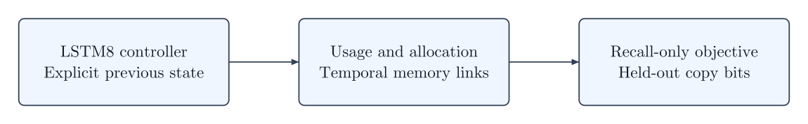
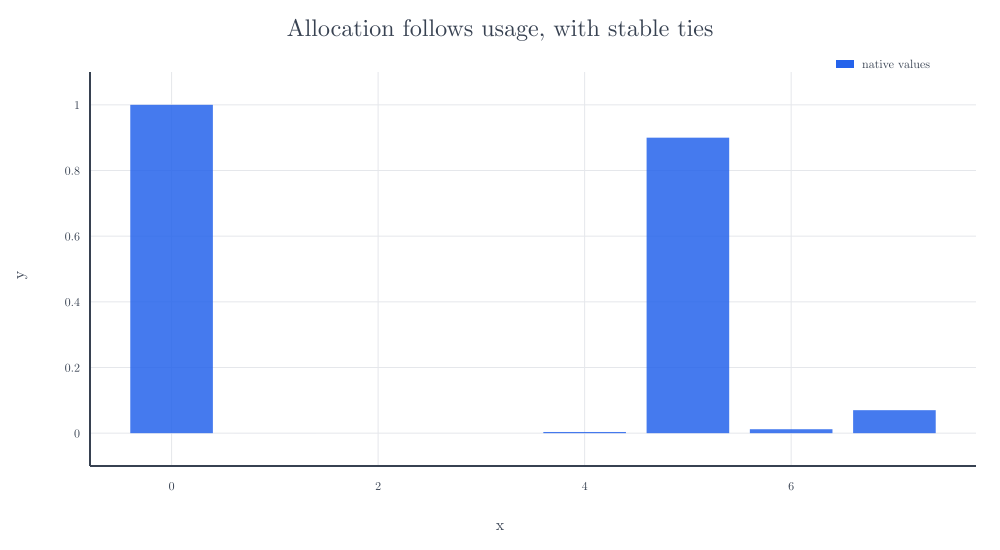
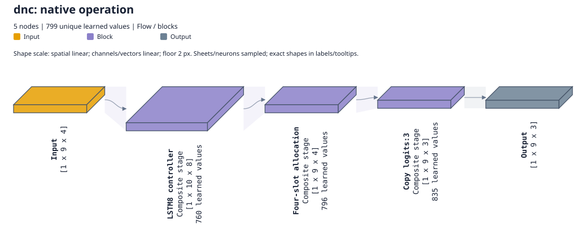
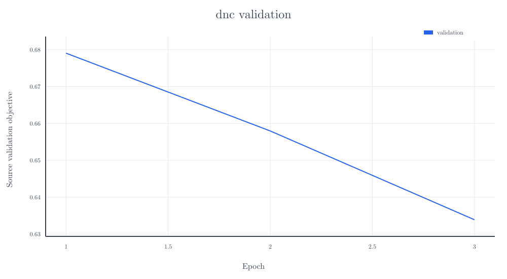
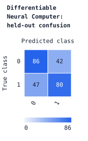

Differentiable Neural Computers: Allocation and Temporal Links
Abstract
Native tensor graphs expose the dnc experiment, with explicit inputs, derivatives and reproducible source fixtures. The complete editable program preserves the bounded source protocol and its checks.
Follow the operation
#include <dm/dm.hpp>
int main(){std::filesystem::create_directories("build");dm::graphics::Diagram d(28,1150);dm::graphics::DiagramNodeStyle s;s.width=12;s.height=5;s.font_size=26;d.node("input",{-16,0},"LSTM8 controller\nExplicit previous state",s).node("graph",{0,0},"Usage and allocation\nTemporal memory links",s).node("audit",{16,0},"Recall-only objective\nHeld-out copy bits",s).edge("input","graph").edge("graph","audit").save_svg("build/dnc_method.svg");}
Allocation follows usage, with stable ties
At empty usage, the first slot receives almost all allocation. The source epsilon maps usage to1e-6+(1-1e-6)u; stable ranks stop derivatives while sorted usage values retain them. An untied row exposes all four soft allocation values.
#include <dm/dm.hpp>
int main(){namespace n=dm::nn;namespace m=n::models;std::filesystem::create_directories("build");auto values=n::concat({m::DncAllocation(n::zeros({1,4})),m::DncAllocation(n::from_vector(std::vector<float>{.8f,.1f,.6f,.3f},{1,4}))},0).reshape({8});if(values.to_vector<float>()[0]<.99999)return 1;
std::print("| coordinate | computed value |\n|---:|---:|\n");auto v=values.to_vector<double>();for(size_t i=0;i<v.size();++i)std::print("| {} | {:.9f} |\n",i,v[i]);n::save_npz("build/dnc_worked.npz",{{"values",values}});dm::graphics::RPlot::create().bars(n::arange(0,std::int64_t(v.size())).to_vector<double>(),v,"native values",{37,99,235}).title("Allocation follows usage, with stable ties").size(1000,550).save_svg("build/dnc_worked.svg");}| coordinate | computed value |
|---|---|
| 0 | 0.999998987 |
| 1 | 0.000001000 |
| 2 | 0.000000000 |
| 3 | 0.000000000 |
| 4 | 0.003600040 |
| 5 | 0.899999082 |
| 6 | 0.012000124 |
| 7 | 0.070000552 |

Trace an executed native operation
The block graph is traced from the actual operation below. Named stages mark its semantic endpoints; the complete program supplies the source geometry and parameter census.
#include <dm/dm.hpp>
int main(){namespace n=dm::nn;namespace m=n::models;std::filesystem::create_directories("build");n::ParameterStore p(45203);auto lengths=n::from_vector(std::vector<int>{2});n::Module model([&](const n::Tensor& x){auto y=m::DncSequence(p,x,lengths);n::model_stage("LSTM8 controller",x,y.at("h"));n::model_stage("Four-slot allocation",y.at("h"),y.at("allocation"));return n::model_stage("Copy logits:3",y.at("allocation"),y.at("logits"));},"dnc: native operation");n::ModelPlotOptions o;o.detail=n::ModelPlotDetail::Blocks;o.sizing.minimum_extent=2;o.sizing.max_planes=2;model.plot(n::zeros({1,9,4}),o).save_svg("build/dnc_network.svg");}
Complete preserved experiment
All mathematical components run natively. Optional TensorFlow recordings are absent; their comparisons are skipped rather than asserted. The source random seeds, parameter names and fixed three-epoch budgets remain visible. Diagnostics without fitting use their original fixed inputs. This is a teaching experiment, not a benchmark parity claim.
#include <dm/dm.hpp>
// CMD: just run-nn dnc
// Differentiable neural computer binary copy with allocation and temporal
// linkage.
//
// Port of tflow's dnc (common/nn/dnc.h -> examples/nn/common/dnc.hpp, shared
// training flow in common/memory_task.hpp). Data: output/datasets/ntm/data.npz
// (the NTM copy task; tflow's scripts/fetch_datasets.py, found through
// paths::Dataset), copied into the run directory like tflow does. 799
// parameters in 7 tensors, Adam .005, batch 8 with BatchOrder(128, 8, 45207),
// three epochs (48 updates). Fixtures: allocation (untied usage + gradient,
// stable ties / full / empty usage), one full access step with probe-weighted
// partials of every input, and an exact temporal write chain; each is compared
// with tflow's fixture when present. Checks: parameter counts, finite
// validation loss, bit-exact .npz restore, label-free repeat prediction, one
// native DncCell step from every recorded state reproduces all nine state
// traces and the access fields (3e-5), input padding cannot change any state
// or gradient, weights immutable under inference.
// Deviations: checkpoints are final.npz (parameter store) instead of SaveV2;
// weights initialise from nn's generator (statistical parity) unless
// init=PATH (tflow's output/models/dnc/initial_arrays.npz) replays tflow's run,
// in which case every record is compared with tflow's run directory (tf=PATH).
// Options: epochs=3 out=PATH init=PATH tf=PATH. Output: output/nn/models/dnc/.
// Local assets: just nn-memory-assets; set DATAMUNGE_DATA_DIR to build/datasets.
// Editable experiment support: memory_data.hpp
// Deterministic local datasets for the synthetic memory-network examples.
// Same task dimensions/protocol as the external assets, with an explicitly
// independent local selection. All languages call this C++ generator.
// Editable experiment support: dataset_assets.hpp
namespace dataset_assets {
inline std::string DataRoot(){return dm::datasets::data_home();}
inline void EnsureSaliency(const std::string& directory){dm::datasets::prepare_example_data("mnist-assets",std::filesystem::path(directory).parent_path().string());}
inline dm::nn::ImageDataset LoadCifar10(const std::string& directory,const std::string& split){dm::datasets::fetch("cifar10",directory);return dm::nn::load_cifar10(directory,split);}
}
// Editable experiment support: memory_task.hpp
// Shared model/data helpers for tflow's 4.3 memory-augmented networks (ntm, dnc, memnet,
// key_value). tflow repeats the same Model class and three-epoch main() in
// each .cc: placeholders for a batch, a hand-built memory network, a loss,
// symbolic gradients of every parameter and of the (encoded) inputs, Adam over
// every parameter, a SaveV2 checkpoint, and npz records of the initial / first
// update / final state. Here the graph is a `Forward` function, session fetches
// are eager calls, gradients come from nn::grad and checkpoints are .npz files
// of the parameter store.
//
// Flow (identical to tflow): copy output/datasets/<dataset>/{data.npz,
// manifest.json} into the run directory, 128 fit / 32 validation / 32 test rows,
// batch 8 with tflow's BatchOrder(128, 8, seed), three epochs = 48 updates,
// records initial_arrays / initial_outputs / first_batch / initial_gradients /
// first_after / final_gradients, save -> restore into a fresh model (bit-exact),
// label-free prediction equals evaluation, weights immutable under inference.
// `init=PATH` (tflow's initial_arrays.npz) replays tflow's run; with the tflow
// run directory present (`tf=`) every replayed record is compared.
// Editable experiment support: checks.hpp
// Small runtime checks used by the executable nn examples. They stay on in
// Release builds and make the example exit nonzero on failure, so `just
// run-all-nn` doubles as a regression test against the recorded TF numbers.
// Editable experiment support: runtime.hpp
// Bounded demonstrations by default; opt into convergence experiments explicitly.
namespace example_runtime {
inline bool Full() {
const char* value = std::getenv("DATAMUNGE_EXAMPLES_FULL");
return value && std::string(value) == "1";
}
template <typename T> T Limit(T requested, T quick_limit) {
return Full() ? requested : std::min(requested, quick_limit);
}
inline void Describe() {
if (!Full())
std::cout << "Quick demonstration: bounded training; convergence metrics require "
"DATAMUNGE_EXAMPLES_FULL=1.\n";
}
} // namespace example_runtime
namespace check {
inline void Require(bool condition, const std::string& message) {
if (!condition) throw std::runtime_error(message);
}
// A short demonstration checks execution, derivatives and persistence; reaching
// a published accuracy/return requires the separately requested full schedule.
inline void TrainingQuality(bool condition, const std::string& message) {
if (example_runtime::Full()) Require(condition, message);
else std::cout << " full-training quality check deferred: " << message << '\n';
}
inline void Near(double actual, double expected, double tolerance, const std::string& message) {
if (!std::isfinite(actual) || !std::isfinite(expected) || std::abs(actual - expected) > tolerance)
throw std::runtime_error(message + ": got " + std::to_string(actual) + ", expected " + std::to_string(expected));
}
/// Expects `f` to throw; returns the message.
template <typename F>
std::string Throws(F&& f, const std::string& message) {
try {
f();
} catch (const std::exception& e) {
return e.what();
}
throw std::runtime_error(message + ": expected an exception");
}
} // namespace check
inline void Header(const std::string& title) {
const std::size_t pad = title.size() < 60 ? 60 - title.size() : 0;
std::cout << "\n== " << title << " " << std::string(pad, '=') << "\n";
}
// Editable experiment support: marked_sequence_demo.hpp
// The three-epoch marked-token memory experiment shared by tflow's 4.1
// recurrent-cell examples (bidirectional_rnn, clockwork_rnn, gradient_clipping,
// indrnn, mgu and, through tflow's common/ml/gated_sequence_demo.h, lstm, gru,
// peephole_lstm and layer_norm_lstm). tflow repeats this Run() in every .cc;
// here it is written once with hooks for each example's extra checks.
//
// Flow (identical to tflow): 512/128/128 marked sequences, Adam .01 (or the
// example's optimizer), batch 32 with tflow's BatchOrder(512, 32, 26019), three
// epochs = 48 updates; npz records of the initial/first/epoch/final state;
// save -> restore into a fresh model (bit-exact); label-free prediction equals
// evaluation; repeat and single-row parity; arbitrary padding cannot change any
// output or gradient; flipping the last valid token cannot change earlier
// states; zero-length sequences keep the zero state; weights immutable under
// inference. Checkpoints are .npz files of the parameter store.
//
// Parity with tflow: the data and batch order are bit-identical to tflow's.
// Parameters initialise from nn's generator, so a default run matches tflow
// only statistically; `init=PATH` (tflow's initial_arrays.npz) replays tflow's
// run, and when the tflow run directory (`tf=`) has the same files the port
// prints and checks the differences.
// Editable experiment support: marked_sequence_data.hpp
// Synthetic variable-length single-marker memory task; padding is never a
// model input through the mask. Port of tflow's common/ml/marked_sequence_data.h
// plus the per-example helpers (SaveData, Copy, Accuracy, Heatmap) that the
// tflow 4.1 recurrent-cell examples repeat in every .cc file.
//
// The generator is std::mt19937 exactly as in tflow, so every split is
// bit-identical to tflow's data.npz.
// Editable experiment support: recurrent_model.hpp
// Generic eager harness for tflow's small explicit-unroll recurrent models
// (the ml::<Name>Model classes of tflow's common/ml/{bidirectional_rnn,
// clockwork_rnn,conv_lstm,gated_sequence,gradient_clipping,indrnn,mgu}.h).
//
// Every tflow model there has the same shape: placeholders for a sequence
// batch, its valid lengths and zero initial states; a cell unrolled with an
// explicit length mask; a head; a loss and a "chosen logit" whose gradients
// with respect to the inputs and initial states are fetched next to the
// forward values; Adam (or SGD with a gradient policy) over every parameter;
// a SaveV2 checkpoint. Here the graph is the `Forward` function, the session
// fetches are eager calls, gradients come from nn::grad and checkpoints are
// .npz files of the parameter store.
//
// A Forward returns named tensors and must contain "logits". Evaluate()
// returns the forward fields, "probability", "loss", "input_gradient", one
// gradient per initial state (named by `initial_gradient_names`) and any
// probe gradients, exactly like tflow's Evaluate fetches.
namespace rnn_cells {
namespace nn = datamunge::nn;
using nn::Tensor;
using Outputs = std::map<std::string, Tensor>;
/// (store, input, lengths, initial states) -> named outputs incl. "logits".
using Forward = std::function<Outputs(nn::ParameterStore&, const Tensor&, const Tensor&, const std::vector<Tensor>&)>;
/// (outputs, labels) -> {loss, chosen}: the training loss and the scalar whose
/// input/initial-state gradients Evaluate reports.
using LossFn = std::function<std::pair<Tensor, Tensor>(const Outputs&, const Tensor&)>;
/// A gradient probe: d target(outputs) / d (input when wrt == 0, else initial state wrt - 1).
struct Probe {
std::string name;
std::function<Tensor(const Outputs&)> target;
int wrt{0};
};
/// One batch fed to a model: inputs, int32 lengths and labels.
struct Feed {
Tensor inputs, lengths, labels;
};
/// Softmax cross-entropy over two classes with int32 labels, and the summed
/// target logit (tflow's `loss` and `chosen`).
inline std::pair<Tensor, Tensor> SoftmaxLoss(const Outputs& out, const Tensor& labels) {
const Tensor& logits = out.at("logits");
const Tensor one_hot = nn::one_hot(labels, logits.shape().back());
const Tensor loss = nn::neg(nn::mean(nn::sum(nn::mul(one_hot, nn::log_softmax(logits, -1)), {1}), {0}));
return {loss, nn::sum(nn::mul(logits, one_hot))};
}
inline bool SameBits(const Tensor& a, const Tensor& b) {
if (a.dtype() != b.dtype() || a.shape() != b.shape()) return false;
auto same = [](const auto& x, const auto& y) {
return x.size() == y.size() && std::memcmp(x.data(), y.data(), x.size() * sizeof(x[0])) == 0;
};
switch (a.dtype()) {
case nn::DType::Float32: return same(a.to_vector<float>(), b.to_vector<float>());
case nn::DType::Float64: return same(a.to_vector<double>(), b.to_vector<double>());
case nn::DType::Int32: return same(a.to_vector<std::int32_t>(), b.to_vector<std::int32_t>());
default: return same(a.to_vector<std::int64_t>(), b.to_vector<std::int64_t>());
}
}
inline bool SameBits(const nn::NamedTensors& a, const nn::NamedTensors& b) {
if (a.size() != b.size()) return false;
for (std::size_t i = 0; i < a.size(); ++i)
if (a[i].first != b[i].first || !SameBits(a[i].second, b[i].second)) return false;
return true;
}
inline nn::NamedTensors Named(const Outputs& out) { return {out.begin(), out.end()}; }
inline Tensor Find(const nn::NamedTensors& arrays, const std::string& name) {
for (const auto& [key, value] : arrays)
if (key == name) return value;
throw std::runtime_error("missing array " + name);
}
/// A gradient from nn::grad (detached), or zeros shaped like `like` when the
/// target did not depend on it (allow_unused).
inline Tensor DefinedGradient(const Tensor& g, const Tensor& like) {
return g.defined() ? g.detach() : nn::zeros_like(like.detach());
}
inline double MaxAbsDiff(const Tensor& a, const Tensor& b) {
const auto x = a.to_vector<double>(), y = b.to_vector<double>();
if (x.size() != y.size()) return INFINITY;
double m = 0;
for (std::size_t i = 0; i < x.size(); ++i) m = std::max(m, std::abs(x[i] - y[i]));
return m;
}
class RecurrentModel {
public:
nn::ParameterStore store;
Forward forward;
LossFn loss_fn = SoftmaxLoss;
std::function<Tensor(const Tensor&)> probability = [](const Tensor& logits) { return nn::softmax(logits, -1); };
/// Per-example shapes of the input and of each zero initial state.
nn::Shape input_shape;
std::vector<nn::Shape> initial_shapes;
/// Names of the initial-state gradients in Evaluate (empty: not reported).
std::vector<std::string> initial_gradient_names;
/// Forward fields returned by Predict (Evaluate returns these plus losses and gradients).
std::vector<std::string> fields;
std::vector<Probe> evaluate_probes;
/// Optional transform of the raw parameter gradients before the optimizer (gradient policies).
std::function<std::vector<Tensor>(const std::vector<Tensor>&)> gradient_policy;
/// Optional projection after each update (IndRNN coefficient bound).
std::function<void(nn::ParameterStore&)> after_update;
/// Extra named inputs a Forward may read through a captured model pointer
/// (tflow's additional placeholders: dropout masks, timestamps, leak). Set by
/// the caller around Evaluate/Gradient/Update; empty by default.
std::map<std::string, Tensor> side_inputs;
/// Optional extra Evaluate fields (e.g. gradients w.r.t. a side input), added to the result.
std::function<void(Outputs& result, const Feed&)> evaluate_extra;
RecurrentModel(std::uint64_t seed, Forward f, nn::Shape input, std::vector<nn::Shape> initials,
std::vector<std::string> initial_names, std::vector<std::string> fetch)
: store(seed), forward(std::move(f)), input_shape(std::move(input)), initial_shapes(std::move(initials)),
initial_gradient_names(std::move(initial_names)), fields(std::move(fetch)) {}
/// Creates every parameter (tflow builds them with the graph) by running one
/// example through the forward pass; with `training`, adds the optimizer.
void Build(bool training, double learning_rate = .01, nn::OptimizerKind kind = nn::OptimizerKind::Adam) {
nn::NoGradGuard guard;nn::Shape shape{1};shape.insert(shape.end(),input_shape.begin(),input_shape.end());forward(store,nn::zeros(shape),nn::zeros({1},nn::DType::Int32),Initials(1));
}
std::vector<Tensor> Initials(std::int64_t n) const {
std::vector<Tensor> out;
for (const auto& s : initial_shapes) {
nn::Shape shape{n};
shape.insert(shape.end(), s.begin(), s.end());
out.push_back(nn::zeros(shape));
}
return out;
}
/// Sequence and lengths only, no labels (tflow's Predict).
Outputs Predict(const Feed& x) {
nn::NoGradGuard guard;
Outputs out = forward(store, x.inputs, x.lengths, Initials(x.inputs.shape()[0]));
Outputs result;
for (const auto& f : fields) result[f] = f == "probability" ? probability(out.at("logits")) : out.at(f);
return result;
}
// Transitional bundles (forward + loss + gradients [+ optimizer step]).
// The 4.1 examples bidirectional_rnn, clockwork_rnn, conv_lstm,
// gradient_clipping, gru, indrnn, layer_norm_lstm, lstm and mgu write these
// steps out themselves; Evaluate/ProbeGradients/Gradient/RawGradients/Update
// remain only for the examples that have not been unbundled yet (the other
// 4.1 cells and 4.3 memory networks). Delete them once nothing uses them.
/// Forward fields, loss and the full-BPTT input/initial-state gradients of the chosen logit.
Outputs Evaluate(const Feed& x) {
Tensor input = x.inputs.detach().clone();
std::vector<Tensor> initials = Initials(x.inputs.shape()[0]);
input.requires_grad_(true);
for (auto& s : initials) s.requires_grad_(true);
Outputs out = forward(store, input, x.lengths, initials);
out["probability"] = probability(out.at("logits"));
const auto [loss, chosen] = loss_fn(out, x.labels);
std::vector<Tensor> wrt{input};
wrt.insert(wrt.end(), initials.begin(), initials.end());
nn::GradOptions options;
options.retain_graph = true;
options.allow_unused = true;
const auto g = nn::grad(std::vector<Tensor>{chosen}, wrt, {}, options);
Outputs result;
for (const auto& f : fields) result[f] = out.at(f).detach();
result["loss"] = loss.detach();
result["input_gradient"] = Defined(g[0], input);
for (std::size_t k = 0; k < initial_gradient_names.size(); ++k)
if (!initial_gradient_names[k].empty()) result[initial_gradient_names[k]] = Defined(g[k + 1], initials[k]);
for (const auto& probe : evaluate_probes) {
const Tensor& target = wrt.at(static_cast<std::size_t>(probe.wrt));
result[probe.name] = Defined(nn::grad(std::vector<Tensor>{probe.target(out)}, {target}, {}, options)[0], target);
}
if (evaluate_extra) evaluate_extra(result, x);
return result;
}
/// Gradients of each probe target (tflow's ModuleGradients / ChannelGradients).
Outputs ProbeGradients(const Feed& x, const std::vector<Probe>& probes) {
Tensor input = x.inputs.detach().clone();
std::vector<Tensor> initials = Initials(x.inputs.shape()[0]);
input.requires_grad_(true);
for (auto& s : initials) s.requires_grad_(true);
const Outputs out = forward(store, input, x.lengths, initials);
std::vector<Tensor> wrt{input};
wrt.insert(wrt.end(), initials.begin(), initials.end());
nn::GradOptions options;
options.retain_graph = true;
options.allow_unused = true;
Outputs result;
for (const auto& probe : probes) {
const Tensor& target = wrt.at(static_cast<std::size_t>(probe.wrt));
result[probe.name] = Defined(nn::grad(std::vector<Tensor>{probe.target(out)}, {target}, {}, options)[0], target);
}
return result;
}
/// Raw loss gradient of every parameter, by name.
nn::NamedTensors Gradient(const Feed& x) {
const auto g = RawGradients(x);
nn::NamedTensors result;
for (std::size_t i = 0; i < g.size(); ++i) result.emplace_back(store.names()[i], g[i]);
return result;
}
std::vector<Tensor> RawGradients(const Feed& x) {
Outputs out = forward(store, x.inputs, x.lengths, Initials(x.inputs.shape()[0]));
const auto params = store.parameters();
nn::GradOptions options;
options.allow_unused = true;
auto g = nn::grad(std::vector<Tensor>{loss_fn(out, x.labels).first}, params, {}, options);
for (std::size_t i = 0; i < g.size(); ++i) g[i] = Defined(g[i], params[i]);
return g;
}
/// Copies of every parameter, by name.
nn::NamedTensors Arrays() const {
nn::NamedTensors out;
for (const auto& name : store.names()) out.emplace_back(name, store.at(name).detach().clone());
return out;
}
void Save(const std::filesystem::path& file) const { store.save(file.string()); }
void Restore(const std::filesystem::path& file) { store.load(file.string(), true); }
/// Overwrites every parameter from an .npz written by tflow (initial_arrays.npz).
void LoadArrays(const std::filesystem::path& file) {
const auto arrays = nn::load_npz(file.string());
check::Require(arrays.size() == store.size(), "init arrays cover exactly the model's parameters");
for (const auto& [name, value] : arrays) {
check::Require(store.contains(name), "init array " + name + " is a model parameter");
store.set(name, nn::cast(value, store.at(name).dtype()));
}
}
private:
static Tensor Defined(const Tensor& g, const Tensor& like) { return DefinedGradient(g, like); }
};
} // namespace rnn_cells
namespace rnn_cells {
/// inputs float [n, 12, 2] (value, marker), lengths/labels/source_ids int32 [n], uniforms float64 [n, 14].
struct MarkedSequences {
Tensor inputs, lengths, labels, source_ids, uniforms;
[[nodiscard]] Feed feed() const { return {inputs, lengths, labels}; }
[[nodiscard]] std::int64_t size() const { return inputs.shape()[0]; }
};
inline MarkedSequences MakeMarkedSequences(int n, int seed, int offset) {
auto y=nn::models::MakeMarkedSequences(n,std::uint32_t(seed),offset);return {y.inputs,y.lengths,y.labels,y.source_ids,y.uniforms};
}
inline MarkedSequences MarkedRows(const MarkedSequences& x, const std::vector<std::int64_t>& rows) {
return {nn::take_rows(x.inputs, rows), nn::take_rows(x.lengths, rows), nn::take_rows(x.labels, rows),
nn::take_rows(x.source_ids, rows), nn::take_rows(x.uniforms, rows)};
}
inline MarkedSequences Copy(const MarkedSequences& x) {
std::vector<std::int64_t> rows(static_cast<std::size_t>(x.size()));
std::iota(rows.begin(), rows.end(), 0);
return MarkedRows(x, rows);
}
inline void SaveData(const std::filesystem::path& file, const MarkedSequences& x) {
nn::save_npz(file.string(), {{"inputs", x.inputs},
{"lengths", x.lengths},
{"labels", x.labels},
{"source_ids", x.source_ids},
{"uniforms", x.uniforms}});
}
inline MarkedSequences LoadData(const std::filesystem::path& file) {
const auto a = nn::load_npz(file.string());
return {Find(a, "inputs"), Find(a, "lengths"), Find(a, "labels"), Find(a, "source_ids"), Find(a, "uniforms")};
}
/// The three splits (512 fit / 128 validation / 128 test) and their data.npz arrays.
inline std::vector<MarkedSequences> MarkedPools(nn::NamedTensors* arrays = nullptr) {
std::vector<MarkedSequences> pools;
for (int k = 0; k < 3; ++k) {
const std::string split = k == 0 ? "fit" : k == 1 ? "validation" : "test";
pools.push_back(MakeMarkedSequences(k ? 128 : 512, 26001 + 2 * k, 10000 * k));
const auto& x = pools.back();
if (arrays) {
arrays->emplace_back(split + "_inputs", x.inputs);
arrays->emplace_back(split + "_lengths", x.lengths);
arrays->emplace_back(split + "_labels", x.labels);
arrays->emplace_back(split + "_source_ids", x.source_ids);
arrays->emplace_back(split + "_uniforms", x.uniforms);
}
}
return pools;
}
/// Fraction of rows whose logit 1 exceeds logit 0 exactly when the label is 1.
inline double Accuracy(const Tensor& logits, const Tensor& labels) {
const auto correct=nn::sum(nn::cast(nn::equal(nn::argmax(logits,1),nn::cast(labels,nn::DType::Int64)),nn::DType::Int64)).item<std::int64_t>();return double(correct)/double(labels.size(0));
}
/// tflow's Heatmap: first 24 sequences, 12 columns of 29x15 cells; blue = -1,
/// red = +1, white = 0, black strip = marker. With `gradients`, values are
/// scaled by the global peak |value| of channel 0.
inline void Heatmap(const std::filesystem::path& file, const Tensor& x, bool gradients = false) {
nn::save_png(nn::models::MarkedSequenceHeatmap(x,gradients),file.string(),0,255);
}
} // namespace rnn_cells
// Editable experiment support: paths.hpp
// Where the nn example ports read datasets and write their outputs.
//
// Datasets: $DATAMUNGE_DATA_DIR, or the user's cache. Public datasets are
// prepared by the example data loaders when first needed.
// Outputs (checkpoints, histories, fixtures): $DATAMUNGE_OUTPUT_DIR, or
// output/nn relative to the working directory (`just run-nn` runs from the
// repository root). Both are created on demand by the caller.
namespace paths {
inline std::filesystem::path DataRoot() {
return dm::datasets::data_home();
}
/// DataRoot() / name, e.g. Dataset("mnist").
inline std::filesystem::path Dataset(const std::string& name) { return DataRoot() / name; }
inline std::filesystem::path OutputRoot() {
return std::filesystem::absolute("build/generative-models");
}
/// OutputRoot() / relative, created as a directory.
inline std::filesystem::path OutputDir(const std::string& relative) {
auto dir = OutputRoot() / relative;
std::filesystem::create_directories(dir);
return dir;
}
} // namespace paths
namespace rnn_cells {
namespace fs = std::filesystem;
struct DemoOptions {
int epochs = 3;
fs::path out; // output directory
fs::path init; // optional initial arrays (tflow's initial_arrays.npz)
fs::path tf; // tflow's run directory for comparisons (skipped when missing)
};
/// tflow's output/models/<name> (where its examples write their runs).
inline fs::path TflowRunDir(const std::string& name) {
return std::filesystem::absolute("build/no-tflow-records")/name;
}
/// Parses epochs=N out=PATH init=PATH tf=PATH.
inline DemoOptions ParseDemoOptions(int argc, char** argv, const std::string& name) {
DemoOptions o;
o.out = paths::OutputRoot() / "models" / name;
o.tf = TflowRunDir(name);
for (int i = 1; i < argc; ++i) {
const std::string a = argv[i];
if (a.rfind("epochs=", 0) == 0) o.epochs = std::stoi(a.substr(7));
else if (a.rfind("out=", 0) == 0) o.out = a.substr(4);
else if (a.rfind("init=", 0) == 0) o.init = a.substr(5);
else if (a.rfind("tf=", 0) == 0) o.tf = a.substr(3);
else throw std::invalid_argument("options: epochs=N out=PATH init=PATH tf=PATH");
}
check::Require(o.epochs > 0 && o.epochs <= 100, "threeCheapDefaultEpochs");
return o;
}
struct DemoContext {
fs::path root;
std::vector<MarkedSequences>& pools;
RecurrentModel& model; // the trained model
RecurrentModel* deployed; // restored, inference only (null before restore)
Outputs output, last_output, cue_output;
nn::NamedTensors initial_arrays;
std::ostringstream metrics; // extra ",\"key\":value" metrics.json entries
};
struct MarkedDemo {
std::string name;
std::int64_t parameters = 0, tensors = 0;
std::string count_message, restore_message;
std::function<std::unique_ptr<RecurrentModel>(bool training)> make;
/// Extra leading metrics.json entries ("\"key\":value," each).
std::string metrics_prefix;
std::string title, description, pass_tag = "fullBPTT/masking/causality/zeroLength/restore/labelFree/immutable";
/// Called for every update with the batch, before Update (gradient_clipping's per-step records).
std::function<void(RecurrentModel&, const MarkedSequences&, const fs::path&, int step)> before_update, after_update;
std::function<void(DemoContext&)> after_training; // after the last epoch, before saving
/// Called at the start of every batch, before the first-batch records and the
/// update (per-step dropout masks, training-mode switches).
std::function<void(RecurrentModel&, const MarkedSequences&, const fs::path&, int step)> before_batch;
std::function<void(DemoContext&)> after_outputs; // right after outputs.npz (structure checks)
std::function<void(DemoContext&)> after_counterfactuals; // after padding/flip evaluations
std::function<void(DemoContext&)> after_predictions; // after predictions.tsv
};
inline void SaveOutputs(const fs::path& file, const Outputs& out) { nn::save_npz(file.string(), Named(out)); }
/// Max |ours - tflow| over the arrays both npz files contain; -1 when tflow's file is missing.
inline double CompareNpz(const fs::path& ours, const fs::path& theirs) {
if (!fs::exists(theirs)) return -1;
const auto a = nn::load_npz(ours.string()), b = nn::load_npz(theirs.string());
double worst = 0;
for (const auto& [name, value] : a)
for (const auto& [other, tf_value] : b)
if (name == other) worst = std::max(worst, MaxAbsDiff(value, tf_value));
return worst;
}
inline std::string ReadText(const fs::path& file) {
std::ifstream f(file, std::ios::binary);
return {std::istreambuf_iterator<char>(f), {}};
}
/// Compares this run with tflow's run directory: data and batch order always
/// (they must be identical); with init= also every replayed record.
/// The number after "key": in a flat JSON object (NaN when absent).
inline double JsonNumber(const std::string& json, const std::string& key) {
const auto at = json.find("\"" + key + "\":");
return at == std::string::npos ? NAN : std::stod(json.substr(at + key.size() + 3));
}
inline void CompareWithTflow(const fs::path& root, const DemoOptions& options, const std::vector<std::string>& records,
const std::string& test_key = "test_ce") {
if (options.tf.empty() || !fs::exists(options.tf / "data.npz")) {
std::cout << "tflow run " << options.tf << " not found; skipping the comparison\n";
return;
}
check::Near(CompareNpz(root / "data.npz", options.tf / "data.npz"), 0, 0, "dataBitIdenticalToTflow");
if (fs::exists(options.tf / "batches.tsv")) {
// tflow ran three epochs; with another epochs= budget the shorter record
// must be a prefix of the longer one (same BatchOrder stream).
const std::string ours = ReadText(root / "batches.tsv"), theirs = ReadText(options.tf / "batches.tsv");
check::Require(ours.rfind(theirs, 0) == 0 || theirs.rfind(ours, 0) == 0, "batchOrderIdenticalToTflow");
}
std::cout << "vs tflow: data.npz and batches.tsv identical";
if (options.init.empty()) {
std::cout << " (pass init=" << (options.tf / "initial_arrays.npz").string() << " to replay tflow's run)\n";
return;
}
double worst_initial = 0, worst_final = 0;
for (const auto& file : records) {
const double d = CompareNpz(root / file, options.tf / file);
if (d < 0) continue;
std::cout << "\n " << file << " max|diff|=" << d;
double& worst = file.rfind("initial", 0) == 0 || file.rfind("first", 0) == 0 ? worst_initial : worst_final;
worst = std::max(worst, d);
}
std::cout << "\n";
check::Require(worst_initial <= 1e-5, "replayedInitialForwardGradientsAndFirstUpdateMatchTflow");
// Later records drift with float32 rounding (Adam divides by tiny second
// moments), so the trained run is checked through its test loss.
const double ours = JsonNumber(ReadText(root / "metrics.json"), test_key), theirs = JsonNumber(ReadText(options.tf / "metrics.json"), test_key);
if (!std::isnan(theirs)) {
std::cout << " " << test_key << " ours=" << ours << " tflow=" << theirs << " (trained records max|diff|=" << worst_final << ")\n";
check::Near(ours, theirs, 5e-3, "replayedTrainedTestLossMatchesTflow");
}
}
} // namespace rnn_cells
namespace memory_nets {
namespace nn = datamunge::nn;
namespace fs = std::filesystem;
using nn::Tensor;
using Batch = std::map<std::string, Tensor>;
using Outputs = std::map<std::string, Tensor>;
using rnn_cells::MaxAbsDiff;
using rnn_cells::SameBits;
/// x[:, begin:begin+width] for a [B, N] tensor (tflow's Slice(x, {0, begin}, {-1, width})).
inline Tensor Cols(const Tensor& x, std::int64_t begin, std::int64_t width) {
return nn::slice(x, {0, begin}, {-1, width});
}
/// The rows of every array of a batch (tflow's Rows / ml::OcrRows).
inline Batch Rows(const Batch& a, const std::vector<std::int64_t>& rows) {
Batch b;
for (const auto& [k, v] : a)
b[k] = nn::take_rows(v, rows);
return b;
}
/// "<split>_<key>" arrays of data.npz under their short keys.
inline Batch
Split(const nn::NamedTensors& all, const std::string& split, const std::vector<std::string>& keys) {
Batch b;
for (const auto& k : keys)
b[k] = rnn_cells::Find(all, split + "_" + k);
return b;
}
inline void SaveMap(const fs::path& file, const std::map<std::string, Tensor>& m) {
nn::save_npz(file.string(), nn::NamedTensors(m.begin(), m.end()));
}
/// Bit-exact equality of every array two maps share (and the same key sets).
inline bool SameMaps(const Outputs& a, const Outputs& b) {
if (a.size() != b.size())
return false;
for (const auto& [k, v] : a)
if (!b.count(k) || !SameBits(v, b.at(k)))
return false;
return true;
}
/// A memory network: the parameters plus a forward pass over a batch.
class MemoryModel {
public:
/// (store, differentiable leaves, batch) -> named outputs incl. "logits".
using Forward =
std::function<Outputs(nn::ParameterStore&, const Batch& leaves, const Batch& batch)>;
nn::ParameterStore store;
Forward forward;
/// Float leaves built from a batch (tflow's x placeholder or OneHot encodings).
std::function<Batch(const Batch&)> leaves;
/// (outputs, batch with labels) -> training loss.
std::function<Tensor(const Outputs&, const Batch&)> loss;
/// leaf name -> Evaluate field of its loss gradient ("input" -> "input_gradient").
std::vector<std::pair<std::string, std::string>> leaf_gradients;
MemoryModel(std::uint64_t seed, Forward f) : store(seed), forward(std::move(f)) {}
/// Creates every parameter by running `example` through the forward pass;
/// with `training`, adds Adam at `learning_rate`.
void Build(const Batch& example, bool training, double learning_rate) {
nn::NoGradGuard guard;forward(store,leaves(example),example);
}
/// Logits from the inputs and lengths only (no labels are read).
Tensor Predict(const Batch& b) {
nn::NoGradGuard guard;
return forward(store, leaves(b), b).at("logits");
}
/// Every forward field, "loss" and the loss gradient of each leaf.
Outputs Evaluate(const Batch& b) {
Batch leaf = leaves(b);
for (auto& [k, v] : leaf) {
v = v.detach().clone();
v.requires_grad_(true);
}
Outputs out = forward(store, leaf, b);
const Tensor l = loss(out, b);
std::vector<Tensor> wrt;
for (const auto& [name, field] : leaf_gradients)
wrt.push_back(leaf.at(name));
nn::GradOptions options;
options.allow_unused = true;
const auto g = nn::grad(std::vector<Tensor>{l}, wrt, {}, options);
Outputs result;
for (const auto& [k, v] : out)
result[k] = v.detach();
result["loss"] = l.detach();
for (std::size_t i = 0; i < wrt.size(); ++i)
result[leaf_gradients[i].second] =
g[i].defined() ? g[i].detach() : nn::zeros_like(wrt[i].detach());
return result;
}
/// Raw loss gradient of every parameter, by name (tflow's Arrays(&batch)).
nn::NamedTensors Arrays() const {
nn::NamedTensors out;
for (const auto& name : store.names())
out.emplace_back(name, store.at(name).detach().clone());
return out;
}
void Save(const fs::path& file) const { store.save(file.string()); }
void Restore(const fs::path& file) { store.load(file.string(), true); }
/// Overwrites every parameter from tflow's initial_arrays.npz.
void LoadArrays(const fs::path& file) {
const auto arrays = nn::load_npz(file.string());
check::Require(
arrays.size() == store.size(), "init arrays cover exactly the model's parameters");
for (const auto& [name, value] : arrays) {
check::Require(store.contains(name), "init array " + name + " is a model parameter");
store.set(name, nn::cast(value, store.at(name).dtype()));
}
}
};
/// One tflow 4.3 example's fixed configuration.
struct TaskSpec {
std::string name, dataset;
std::vector<std::string> keys; // per-split arrays of data.npz
std::string history_column; // "validation_bit_ce" or "validation_ce"
std::string print_name; // "validationBitCE" or "validationCE"
std::string test_key; // metrics.json key compared with tflow
std::uint64_t order_seed = 0;
std::int64_t parameters = 0, tensors = 0;
std::string count_message;
bool first_forward = false; // DNC also records first_forward / final_first_forward
};
/// The state of a run after training and restore.
struct TaskRun {
fs::path root;
rnn_cells::DemoOptions options;
Batch fit, validation, test, first;
int updates = 0;
std::unique_ptr<MemoryModel> model, deployed;
nn::NamedTensors weights; // deployed arrays after restore
Outputs out; // deployed->Evaluate(test)
Tensor prediction;
std::chrono::steady_clock::time_point start;
};
/// Data, training, records, restore and the label-free prediction checks.
/// outputs.npz, model_arrays.npz, the immutability check, metrics.json and
/// the comparison with tflow's run directory.
} // namespace memory_nets
namespace memory_data {
namespace nn = datamunge::nn;
inline nn::NamedTensors Make(bool copy_task) {
std::mt19937 generator(copy_task ? 45101 : 45301);
nn::NamedTensors records;
for (int split = 0; split < 3; ++split) {
const std::string prefix = split == 0 ? "fit_" : split == 1 ? "validation_" : "test_";
const int count = split == 0 ? 128 : 32;
std::vector<int> lengths(count), ids(count), facts(count * 12), queries(count), answers(count);
std::vector<float> input(count * 36), target(count * 27);
for (int row = 0; row < count; ++row) {
ids[row] = split * 10000 + row;
const int length = 1 + generator() % (copy_task ? 4 : 6);
lengths[row] = length;
if (copy_task) {
for (int step = 0; step < length; ++step)
for (int bit = 0; bit < 3; ++bit) {
const float value = float(generator() & 1);
input[(row * 9 + step) * 4 + bit] = value;
target[(row * 9 + length + 1 + step) * 3 + bit] = value;
}
input[(row * 9 + length) * 4 + 3] = 1;
} else {
int entities[7] = {1, 2, 3, 4, 5, 6, 7};
for (int i = 6; i > 0; --i)
std::swap(entities[i], entities[generator() % (i + 1)]);
const int selected = generator() % length;
for (int slot = 0; slot < length; ++slot) {
const int answer = generator() % 4;
facts[(row * 6 + slot) * 2] = entities[slot];
facts[(row * 6 + slot) * 2 + 1] = 8 + answer;
if (slot == selected) {
queries[row] = entities[slot];
answers[row] = answer;
}
}
}
}
if (copy_task) {
records.emplace_back(prefix + "input", nn::from_vector(input, {count, 9, 4}));
records.emplace_back(prefix + "target", nn::from_vector(target, {count, 9, 3}));
} else {
records.emplace_back(prefix + "facts", nn::from_vector(facts, {count, 6, 2}));
records.emplace_back(prefix + "query", nn::from_vector(queries, {count}));
records.emplace_back(prefix + "target", nn::from_vector(answers, {count}));
}
records.emplace_back(prefix + "lengths", nn::from_vector(lengths, {count}));
records.emplace_back(prefix + "source_ids", nn::from_vector(ids, {count}));
}
return records;
}
inline void PrepareDataset(const std::string& directory, bool copy_task, bool overwrite = false) {
datamunge::datasets::prepare_example_data("memory",std::filesystem::path(directory).parent_path().string());
}
inline void Prepare(const std::string& directory, bool overwrite = false) {
for (bool copy_task : {false, true}) {
PrepareDataset(
(std::filesystem::path(directory) / (copy_task ? "ntm" : "memnet")).string(),
copy_task,
overwrite);
}
}
} // namespace memory_data
// Editable experiment support: dnc.hpp
// Differentiable neural computer allocation, freeing, temporal links and memory
// access. Port of tflow's common/nn/dnc.h (4 slots x 4 wide memory, LSTM(8)
// controller, one write head with allocation + content addressing, one read
// head mixing backward / forward temporal links and content; 799 parameters).
// Editable experiment support: ntm.hpp
// Neural Turing Machine content/location addressing and differentiable
// erase/add memory. Port of tflow's common/nn/ntm.h (4 slots x 4 wide memory,
// LSTM(8) controller, one read and one write head; 851 parameters).
namespace memory_nets {
struct NtmAddress {
Tensor content, interpolated, shifted, weights;
};
/// Content addressing (cosine + softplus strength), gated interpolation with
/// the previous weights, a 3-tap circular shift and sharpening. memory
/// [B, 4, 4], parameters [B, 10] = key(4) beta(1) gate(1) shift(3) gamma(1),
/// previous [B, 4].
inline NtmAddress NtmAddressing(const Tensor& memory, const Tensor& parameters, const Tensor& previous) {
auto y=nn::models::NtmAddressing(memory,parameters,previous);return {y.content,y.interpolated,y.shifted,y.weights};
}
struct NtmState {
Tensor h, c, memory, read, read_weights, write_weights;
};
struct NtmStep {
NtmState state;
Tensor logits, interface;
};
/// One NTM step: controller LSTM on [input, previous read], a 28-wide
/// interface (write address 10, read address 10, erase 4, add 4), erase/add
/// write, then the read from the written memory.
inline NtmStep NtmCell(nn::ParameterStore& p, const Tensor& input, const NtmState& previous) {
auto y=nn::models::NtmCell(p,input,{previous.h,previous.c,previous.memory,previous.read,previous.read_weights,previous.write_weights});return {{y.h,y.c,y.memory,y.read,y.read_weights,y.write_weights},y.logits,y.interface};
}
/// The nine-step unroll with valid steps t <= 2 * length (tflow's nn::Ntm).
/// Fields: logits [B,9,3], interface [B,9,28] (zero on invalid steps) and the
/// state traces h, c [B,10,8], memory [B,10,4,4], read, read_weights,
/// write_weights [B,10,4] (index 0 = initial state).
inline Outputs Ntm(nn::ParameterStore& p, const Tensor& x, const Tensor& lengths) {
auto path=nn::models::NtmSequence(p,x,lengths);return {{"logits",path.logits},{"h",path.h},{"c",path.c},{"memory",path.memory},{"read",path.read},{"read_weights",path.read_weights},{"write_weights",path.write_weights},{"interface",path.interface}};
}
/// Bit cross-entropy over the three target bits of the recall steps
/// length < t <= 2 * length (tflow's ntm/dnc loss).
inline Tensor CopyLoss(const Outputs& out, const Batch& b) {
const Tensor& logits = out.at("logits");
const Tensor positions = nn::expand_dims(nn::arange(0, 9, 1, nn::DType::Float32), 0);
const Tensor source = nn::expand_dims(nn::cast(b.at("lengths"), nn::DType::Float32), 1);
const Tensor mask = nn::cast(nn::logical_and(nn::greater(positions, source), nn::less_equal(positions, nn::mul(source, 2.0))),
nn::DType::Float32);
const Tensor ce = nn::sub(nn::softplus(logits), nn::mul(b.at("target"), logits));
return nn::div(nn::sum(nn::mul(ce, nn::expand_dims(mask, 2)), {0, 1, 2}), nn::mul(nn::sum(mask, {0, 1}), 3.0));
}
/// The binary-copy model of tflow's ntm.cc / dnc.cc around a forward pass.
inline std::unique_ptr<MemoryModel> CopyModel(std::uint64_t seed,
std::function<Outputs(nn::ParameterStore&, const Tensor&, const Tensor&)> path,
bool training, const Batch& example) {
auto m = std::make_unique<MemoryModel>(seed, [path](nn::ParameterStore& p, const Batch& leaves, const Batch& b) {
return path(p, leaves.at("input"), b.at("lengths"));
});
m->leaves = [](const Batch& b) { return Batch{{"input", b.at("input")}}; };
m->loss = CopyLoss;
m->leaf_gradients = {{"input", "input_gradient"}};
m->Build(example, training, .005);
return m;
}
/// tflow's ntm Model: seed 45103, Adam .005.
inline std::unique_ptr<MemoryModel> NtmModel(bool training, const Batch& example) { return CopyModel(45103, Ntm, training, example); }
/// Bit accuracy and exact-copy count of the recall steps (tflow's ntm/dnc metrics).
struct CopyScore {
int correct = 0, total = 0, exact = 0;
};
inline CopyScore ScoreCopy(const Tensor& prediction, const Batch& test) {
const auto p = prediction.to_vector<float>(), y = test.at("target").to_vector<float>();
const auto lengths = test.at("lengths").to_vector<std::int32_t>();
CopyScore s;
for (std::size_t b = 0; b < lengths.size(); ++b) {
bool match = true;
const int n = lengths[b];
for (int t = n + 1; t <= 2 * n; ++t)
for (int j = 0; j < 3; ++j) {
const std::size_t i = (b * 9 + t) * 3 + j;
const bool good = (p[i] > 0) == (y[i] > 0);
s.correct += good;
match &= good;
++s.total;
}
s.exact += match;
}
return s;
}
/// Rows {0, 1} of the test split with every input step after 2 * length set to `value`.
inline Batch PadCopyInputs(const Batch& test, float value) {
Batch pad = Rows(test, {0, 1});
auto input = pad.at("input").to_vector<float>();
const auto lengths = pad.at("lengths").to_vector<std::int32_t>();
for (int b = 0; b < 2; ++b)
for (int t = 2 * lengths[b] + 1; t < 9; ++t)
for (int j = 0; j < 4; ++j) input[(b * 9 + t) * 4 + j] = value;
pad["input"] = nn::from_vector(input, {2, 9, 4});
return pad;
}
} // namespace memory_nets
namespace memory_nets {
using nn::models::DncContent;
using nn::models::DncAllocation;
using nn::models::DncLink;
using nn::models::DncTemporal;
using nn::models::DncState;
using nn::models::DncNames;
using nn::models::DncAccess;
using nn::models::DncMemory;
using nn::models::DncStep;
using nn::models::DncCell;
inline Outputs Dnc(nn::ParameterStore& p,const Tensor& input,const Tensor& lengths){return nn::models::DncSequence(p,input,lengths);}
/// tflow's dnc Model: seed 45203, Adam .005.
inline std::unique_ptr<MemoryModel> DncModel(bool training, const Batch& example) { return CopyModel(45203, Dnc, training, example); }
} // namespace memory_nets
using namespace memory_nets;
// Editable experiment support: memory_validation.hpp
// Canonical numerical fixtures shared by C++, R and Python. No fitting loop.
namespace memory_validation {
using namespace memory_nets;
inline void NtmFixtures(const std::string& directory) {
const fs::path root(directory);
std::vector<float> memory(32), parameters(20);
for (int i = 0; i < 32; ++i)
memory[i] = float(.3 * std::sin(i * .7) + .05);
for (int i = 0; i < 20; ++i)
parameters[i] = float(.4 * std::cos(i * .3));
Tensor m = nn::from_vector(memory, {2, 4, 4}), p = nn::from_vector(parameters, {2, 10});
Tensor v = nn::from_vector(std::vector<float>{.7f, .1f, .15f, .05f, .1f, .2f, .3f, .4f}, {2, 4});
Tensor probe =
nn::from_vector(std::vector<float>{.2f, -.8f, .5f, .9f, .8f, -.3f, .7f, -.4f}, {2, 4});
m.requires_grad_(true), p.requires_grad_(true), v.requires_grad_(true);
const auto address = NtmAddressing(m, p, v);
const auto g = nn::grad(std::vector<Tensor>{nn::sum(nn::mul(address.weights, probe))}, {m, p, v});
const fs::path file = root / "address_fixture.npz";
nn::save_npz(
file.string(),
{{"memory", m.detach()},
{"parameters", p.detach()},
{"previous", v.detach()},
{"probe", probe},
{"content", address.content.detach()},
{"interpolated", address.interpolated.detach()},
{"shifted", address.shifted.detach()},
{"weights", address.weights.detach()},
{"memory_gradient", g[0]},
{"parameters_gradient", g[1]},
{"previous_gradient", g[2]}});
double total = 0;
for (float w : address.weights.to_vector<float>())
total += w;
check::Near(total, 2, 1e-5, "address weights are distributions");
}
inline Tensor Vec(const std::vector<float>& v, const nn::Shape& shape) {
return nn::from_vector(v, shape);
}
inline void DncFixtures(const std::string& directory) {
const fs::path root(directory);
{ // allocation
std::vector<float> probe(12);
for (int j = 0; j < 12; ++j)
probe[j] = float(.3 * std::sin(j * .7));
Tensor usage = Vec({.2f, .7f, .1f, .5f, .8f, .3f, .6f, .1f, .01f, .2f, .4f, .9f}, {3, 4});
const Tensor ties = Vec({0, 0, 0, 0, .2f, .2f, .8f, .4f, 1, 1, 1, 1}, {3, 4}),
p = Vec(probe, {3, 4});
usage.requires_grad_(true);
const Tensor allocation = DncAllocation(usage);
const auto g = nn::grad(std::vector<Tensor>{nn::sum(nn::mul(allocation, p))}, {usage});
Tensor tie;
{
nn::NoGradGuard guard;
tie = DncAllocation(ties);
}
nn::save_npz(
(root / "allocation_fixture.npz").string(),
{{"usage", usage.detach()},
{"probe", p},
{"allocation", allocation.detach()},
{"gradient", g[0]},
{"ties", ties},
{"tie_allocation", tie}});
}
{ // one access step with every partial
std::map<std::string, Tensor> inputs;
for (auto [name, width] : std::vector<std::pair<std::string, int>>{
{"memory", 16},
{"read_weights", 4},
{"write_weights", 4},
{"usage", 4},
{"precedence", 4},
{"links", 16},
{"interface", 24}}) {
std::vector<float> v(2 * width);
for (int j = 0; j < 2 * width; ++j)
v[j] = name == "memory" || name == "interface" ? float(.3 * std::sin(j * .43) + .1)
: float(.05 + .03 * (j % 5));
inputs[name] = width == 16 ? Vec(v, {2, 4, 4}) : Vec(v, {2, width});
}
inputs["usage"] = Vec({.1f, .4f, .7f, .9f, .2f, .8f, .35f, .6f}, {2, 4});
{
auto links = inputs["links"].to_vector<float>();
for (int b = 0; b < 2; ++b)
for (int j = 0; j < 4; ++j)
links[b * 16 + j * 5] = 0;
inputs["links"] = Vec(links, {2, 4, 4});
}
std::vector<Tensor> leaves;
std::vector<std::string> leafnames;
for (auto& [name, value] : inputs) {
value.requires_grad_(true);
leaves.push_back(value);
leafnames.push_back(name);
}
const Tensor zero = nn::zeros({2, 8});
DncState previous{
zero,
zero,
inputs["memory"],
nn::zeros({2, 4}),
inputs["read_weights"],
inputs["write_weights"],
inputs["usage"],
inputs["precedence"],
inputs["links"]};
const auto access = DncMemory(inputs["interface"], previous);
const auto values = access.state.Values();
std::map<std::string, Tensor> fields{
{"allocation", access.allocation},
{"forward", access.forward},
{"backward", access.backward}};
for (int j = 2; j < 9; ++j)
fields[DncNames()[j]] = values[j];
Tensor objective = nn::sum(nn::mul(inputs["write_weights"], 0.0));
nn::NamedTensors saved;
int field = 0;
for (const auto& [name, value] : fields) {
const bool matrix = name == "memory" || name == "links";
std::vector<float> probe(matrix ? 32 : 8);
for (std::size_t j = 0; j < probe.size(); ++j)
probe[j] = float(.2 * std::sin(j * .37 + field * .61));
const Tensor p = matrix ? Vec(probe, {2, 4, 4}) : Vec(probe, {2, 4});
saved.emplace_back("probe_" + name, p);
objective = nn::add(objective, nn::sum(nn::mul(value, p)));
saved.emplace_back(name, value.detach());
++field;
}
nn::GradOptions options;
options.allow_unused = true;
const auto g = nn::grad(std::vector<Tensor>{objective}, leaves, {}, options);
saved.emplace_back("objective", objective.detach());
for (std::size_t j = 0; j < g.size(); ++j)
saved.emplace_back(
"gradient_" + leafnames[j], g[j].defined() ? g[j] : nn::zeros_like(leaves[j].detach()));
for (const auto& [name, value] : inputs)
saved.emplace_back("input_" + name, value.detach());
nn::save_npz((root / "access_fixture.npz").string(), saved);
}
{ // exact temporal write chain into slots 2, 0, 3
Tensor p = nn::zeros({1, 4}), links = nn::zeros({1, 4, 4});
std::vector<Tensor> trace{links};
for (int slot : {2, 0, 3}) {
std::vector<float> w(4, 0.f);
w[slot] = 1;
const auto next = DncTemporal(links, p, Vec(w, {1, 4}));
links = next.links;
p = next.precedence;
trace.push_back(links);
}
nn::save_npz(
(root / "temporal_fixture.npz").string(), {{"links", nn::stack(trace)}, {"precedence", p}});
const auto l = links.to_vector<float>();
// After writes 2 -> 0 -> 3: L[0][2] = L[3][0] = 1 and nothing else.
for (int i = 0; i < 16; ++i)
check::Near(l[i], i == 2 || i == 12 ? 1 : 0, 0, "exact temporal write chain");
}
}
} // namespace memory_validation
int main(int argc, char** argv) {
try {
nn::set_num_threads(4);
const auto options = rnn_cells::ParseDemoOptions(argc, argv, "dnc");
TaskSpec spec;
spec.name = "dnc";
spec.dataset = "ntm";
spec.keys = {"input", "target", "lengths", "source_ids"};
spec.history_column = "validation_bit_ce";
spec.print_name = "validationBitCE";
spec.test_key = "test_bit_ce";
spec.order_seed = 45207;
spec.parameters = 799;
spec.tensors = 7;
spec.count_message = "799 parameters seven tensors";
spec.first_forward = true;
TaskRun run;
run.start = std::chrono::steady_clock::now();
run.options = options;
run.root = options.out;
const fs::path& root = run.root;
fs::create_directories(root);
const fs::path source = paths::Dataset(spec.dataset);
memory_data::PrepareDataset(source.string(), true);
for (const char* f : {"data.npz", "manifest.json"})
if (fs::exists(source / f))
fs::copy_file(source / f, root / f, fs::copy_options::overwrite_existing);
memory_validation::DncFixtures(root.string());
const auto all = nn::load_npz((root / "data.npz").string());
run.fit = Split(all, "fit", spec.keys);
run.validation = Split(all, "validation", spec.keys);
run.test = Split(all, "test", spec.keys);
const Batch example = Rows(run.fit, {0});
run.model = DncModel(true, example);
auto& m = *run.model;
nn::OptimizerConfig report_config;report_config.kind=nn::OptimizerKind::Adam;nn::Optimizer report_optimizer(m.store,.005,report_config);
check::Require(
m.store.count() == spec.parameters &&
static_cast<std::int64_t>(m.store.size()) == spec.tensors,
spec.count_message);
auto named_gradients = [&](const Batch& b) {
const auto out = m.forward(m.store, m.leaves(b), b);
const auto parameters = m.store.parameters();
nn::GradOptions grad_options;
grad_options.allow_unused = true;
auto gradients = nn::grad(std::vector<Tensor>{m.loss(out, b)}, parameters, {}, grad_options);
nn::NamedTensors named;
for (std::size_t i = 0; i < gradients.size(); ++i) {
if (!gradients[i].defined())
gradients[i] = nn::zeros_like(parameters[i].detach());
named.emplace_back(m.store.names()[i], gradients[i].detach());
}
return named;
};
if (!options.init.empty())
m.LoadArrays(options.init);
nn::save_npz((root / "initial_arrays.npz").string(), m.Arrays());
SaveMap(root / "initial_outputs.npz", m.Evaluate(run.test));
const auto fit_rows = static_cast<std::size_t>(run.fit.begin()->second.shape()[0]);
nn::BatchOrder order(fit_rows, 8, spec.order_seed);
std::ofstream history(root / "history.tsv"), batches(root / "batches.tsv");
history << "epoch\t" << spec.history_column << "\n";
batches << "epoch\tstep\trow\n";
for (int e = 1; e <= options.epochs; ++e) {
order.begin_epoch();
for (;;) {
const auto rows = order.next();
if (rows.empty())
break;
const Batch b = Rows(run.fit, rows);
if (!run.updates) {
run.first = b;
SaveMap(root / "first_batch.npz", b);
nn::save_npz((root / "initial_gradients.npz").string(), named_gradients(b));
if (spec.first_forward)
SaveMap(root / "first_forward.npz", m.Evaluate(b));
}
const auto out = m.forward(m.store, m.leaves(b), b);
const auto parameters = m.store.parameters();
nn::GradOptions grad_options;
grad_options.allow_unused = true;
auto gradients =
nn::grad(std::vector<Tensor>{m.loss(out, b)}, parameters, {}, grad_options);
for (std::size_t i = 0; i < gradients.size(); ++i)
if (!gradients[i].defined())
gradients[i] = nn::zeros_like(parameters[i].detach());
report_optimizer.step(gradients);
if (!run.updates)
nn::save_npz((root / "first_after.npz").string(), m.Arrays());
for (auto row : rows)
batches << e << '\t' << run.updates << '\t' << row << '\n';
++run.updates;
}
const float ce = m.Evaluate(run.validation).at("loss").item<float>();
check::Require(std::isfinite(ce), "finite CE");
history << e << '\t' << ce << '\n';
std::cout << "epoch=" << e << " " << spec.print_name << "=" << ce << std::endl;
}
history.close();
batches.close();
nn::save_npz((root / "final_gradients.npz").string(), named_gradients(run.first));
if (spec.first_forward)
SaveMap(root / "final_first_forward.npz", m.Evaluate(run.first));
m.Save(root / "final.npz");
run.deployed = DncModel(false, example);
run.deployed->Restore(root / "final.npz");
run.weights = run.deployed->Arrays();
check::Require(SameBits(m.Arrays(), run.weights), "restore bitexact");
run.out = run.deployed->Evaluate(run.test);
run.prediction = run.deployed->Predict(run.test);
check::Require(
SameBits(run.prediction, run.out.at("logits")) &&
SameBits(run.prediction, run.deployed->Predict(run.test)),
"label-free repeat inference");
const auto& test = run.test;
const auto& out = run.out;
const auto lengths = test.at("lengths").to_vector<std::int32_t>();
for (int t = 0; t < 9; ++t) {
std::vector<Tensor> values;
for (const auto& name : DncNames())
values.push_back(nn::select(out.at(name), 1, t));
DncStep step;
{
nn::NoGradGuard guard;
step = DncCell(
run.deployed->store, nn::select(test.at("input"), 1, t), DncState::From(values));
}
std::map<std::string, Tensor> fields{
{"logits", step.logits},
{"interface", step.interface},
{"allocation", step.allocation},
{"forward", step.forward},
{"backward", step.backward}};
const auto state = step.state.Values();
for (std::size_t j = 0; j < state.size(); ++j)
fields[DncNames()[j]] = state[j];
for (const auto& [name, value] : fields) {
const bool matrix = name == "memory" || name == "links";
const int next = fields.count(name) &&
std::find(DncNames().begin(), DncNames().end(), name) != DncNames().end();
const auto a = value.to_vector<float>(),
e = nn::select(out.at(name), 1, t + next).to_vector<float>();
const std::size_t width = a.size() / 32;
for (int b = 0; b < 32; ++b)
if (t <= 2 * lengths[b])
for (std::size_t j = 0; j < width; ++j)
check::Near(
a[b * width + j],
e[b * width + j],
3e-5,
matrix ? "DNC streaming matrix parity" : "DNC streaming state/access parity");
}
}
const Batch pad = PadCopyInputs(test, .93f);
const auto normal = run.deployed->Evaluate(Rows(test, {0, 1})),
padded = run.deployed->Evaluate(pad);
check::Require(SameMaps(normal, padded), "all DNC state/gradient padding invariance");
SaveMap(run.root / "padding_inputs.npz", pad);
SaveMap(run.root / "padding_outputs.npz", padded);
const auto score = ScoreCopy(run.prediction, test);
int confusion[2][2] = {};
const auto predicted_bits = run.prediction.to_vector<float>();
const auto target_bits = test.at("target").to_vector<float>();
for (std::size_t b = 0; b < lengths.size(); ++b)
for (int t = lengths[b] + 1; t <= 2 * lengths[b]; ++t)
for (int bit = 0; bit < 3; ++bit) {
const auto index = (b * 9 + t) * 3 + bit;
++confusion[target_bits[index] > 0][predicted_bits[index] > 0];
}
check::Require(
confusion[0][0] + confusion[0][1] + confusion[1][0] + confusion[1][1] == score.total &&
confusion[0][0] + confusion[1][1] == score.correct,
"all held-out recall bits counted");
std::cout << "confusion (truth rows, predicted columns; recall bits):\n";
for (const auto& row : confusion)
std::cout << row[0] << ' ' << row[1] << '\n';
const float ce = out.at("loss").item<float>();
std::ostringstream metrics, summary;
metrics << "{\"parameters\":799,\"epochs\":" << options.epochs << ",\"updates\":" << run.updates
<< ",\"test_bit_ce\":" << ce
<< ",\"bit_accuracy\":" << double(score.correct) / score.total
<< ",\"exact\":" << score.exact << "}";
summary << "testBitCE=" << ce << " bitAccuracy=" << double(score.correct) / score.total
<< " exact=" << score.exact
<< "/32;restore/nativeAllStateStreaming/padding/labelFree/immutable PASS";
{
const fs::path& root = run.root;
SaveMap(root / "outputs.npz", run.out);
nn::save_npz((root / "model_arrays.npz").string(), run.weights);
check::Require(SameBits(run.deployed->Arrays(), run.weights), "immutable inference");
{
std::ofstream metrics_file(root / "metrics.json");
metrics_file << metrics.str() << "\n";
std::ofstream html(root / "index.html");
html << "<!doctype html><meta charset='utf-8'><title>" << spec.name
<< "</title><style>body{font:16px system-ui;margin:30px;max-width:1000px}</style><h1>"
<< spec.name << "</h1>"
<< "<p>Binary copy (the NTM task). A differentiable neural computer (LSTM(8) "
"controller, 4x4 memory, dynamic "
"allocation from usage with free gates, temporal link matrix, read modes backward "
"/ forward / content) is "
"trained with masked bit cross-entropy on the recall steps for three epochs.</p>"
<< "<p>" << summary.str()
<< "</p><p>See metrics.json, history.tsv and the .npz records.</p>";
check::Require(bool(metrics_file) && bool(html), "complete records");
}
const double seconds =
std::chrono::duration<double>(std::chrono::steady_clock::now() - run.start).count();
std::cout << summary.str() << " (" << seconds << " s)\nArtifacts:" << (root / "index.html")
<< std::endl;
std::vector<std::string> records{
"first_batch.npz",
"initial_arrays.npz",
"initial_outputs.npz",
"initial_gradients.npz",
"first_after.npz",
"final_gradients.npz",
"model_arrays.npz",
"outputs.npz"};
if (spec.first_forward) {
records.push_back("first_forward.npz");
records.push_back("final_first_forward.npz");
}
rnn_cells::CompareWithTflow(root, run.options, records, spec.test_key);
}
for (const char* f : {"allocation_fixture.npz", "access_fixture.npz", "temporal_fixture.npz"})
if (fs::exists(options.tf / f)) {
const double d = rnn_cells::CompareNpz(run.root / f, options.tf / f);
std::cout << " " << f << " max|diff| vs tflow=" << d << "\n";
check::Require(d <= 1e-5, std::string(f) + " matches tflow");
}
return 0;
} catch (const std::exception& e) {
std::cerr << e.what() << '\n';
return 1;
}
}
epoch=1 validationBitCE=0.679049 epoch=2 validationBitCE=0.657952 epoch=3 validationBitCE=0.633877 confusion (truth rows, predicted columns; recall bits): 86 42 47 80 testBitCE=0.627307 bitAccuracy=0.65098 exact=2/32;restore/nativeAllStateStreaming/padding/labelFree/immutable PASS (1.31189 s) Artifacts:"/mnt/projects/datamunge/docs/mepml/nn/4_recurrent_and_sequence_models/4.3_memory_augmented_networks/build/generative-models/models/dnc/index.html" tflow run "/mnt/projects/datamunge/docs/mepml/nn/4_recurrent_and_sequence_models/4.3_memory_augmented_networks/build/no-tflow-records/dnc" not found; skipping the comparison
Read the validation history
These points are validation diagnostics at the original three epoch boundaries; the fixed-final source protocol is retained. They do not imply convergence.
#include <dm/dm.hpp>
int main(){std::ifstream input("build/generative-models/models/dnc/history.tsv");std::string header;std::getline(input,header);std::vector<double>x,y;double a,b;while(input>>a>>b){x.push_back(a);y.push_back(b);}if(x.size()!=3)return 1;std::print("| epoch | validation objective |\n|---:|---:|\n");for(size_t i=0;i<x.size();++i)std::print("| {:.0f} | {:.9f} |\n",x[i],y[i]);dm::graphics::RPlot::create().lines(x,y,"validation",{37,99,235}).x_label("Epoch").y_label("Source validation objective").title("dnc validation").size(1000,550).save_svg("build/dnc_history.svg");}| epoch | validation objective |
|---|---|
| 1 | 0.679049000 |
| 2 | 0.657952000 |
| 3 | 0.633877000 |

Interpretation
Use the computed checks, held-out tables and galleries to assess this bounded run. Exact enumeration is restricted to tiny binary models; CD is a stopped sampled surrogate, and ULA is discretized sampling. The attention and memory fixtures verify mechanisms, not natural-language or long-memory benchmarks. Weak results remain part of the report.
Count every held-out recall bit
Only recall steps contribute. This matrix uses current saved test logits and targets; it is distinct from whole-sequence exact-copy success.
#include <dm/dm.hpp>
int main(){namespace n=dm::nn;std::filesystem::create_directories("build");std::map<std::string,n::Tensor> output,data;for(auto& [key,value]:n::load_npz("build/generative-models/models/dnc/outputs.npz"))output.emplace(key,value);for(auto& [key,value]:n::load_npz("build/generative-models/models/dnc/data.npz"))data.emplace(key,value);std::vector<n::Tensor> targets,predictions;auto lengths=data.at("test_lengths").to_vector<std::int32_t>();for(std::size_t row=0;row<lengths.size();++row){auto start=lengths[row]+1,end=2*lengths[row]+1;targets.push_back(n::reshape(n::cast(n::greater(n::slice_axis(n::select(data.at("test_target"),0,row),0,start,end),0.),n::DType::Int64),{-1}));predictions.push_back(n::reshape(n::cast(n::greater(n::slice_axis(n::select(output.at("logits"),0,row),0,start,end),0.),n::DType::Int64),{-1}));}auto truth=n::concat(targets,0),pred=n::concat(predictions,0); n::ConfusionMatrix cm(2);cm.add(truth,pred);cm.save_svg("build/dnc_confusion.svg",{.title="Differentiable Neural Computer: held-out confusion"});n::save_npz("build/dnc_confusion.npz",{{"counts",cm.to_tensor()}});std::cout<<"Truth rows, prediction columns; "<<truth.numel()<<" held-out observations\n";for(const auto& row:cm.cells()){for(auto count:row)std::cout<<count<<" ";std::cout<<"\n";}}
Truth rows, prediction columns; 255 held-out observations 86 42 47 80
